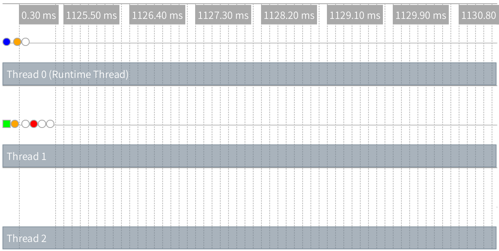
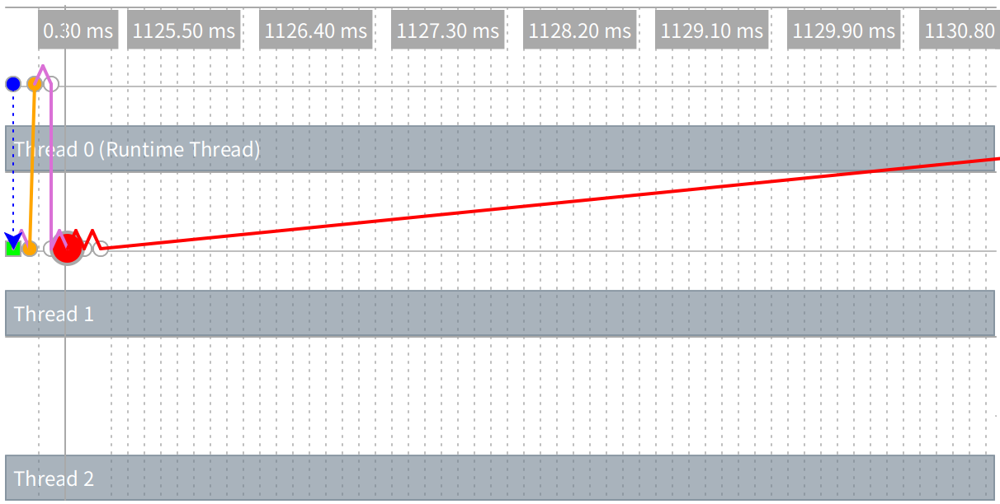
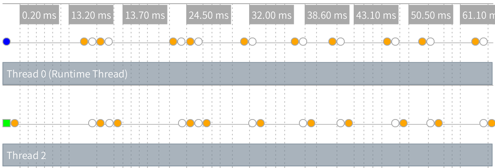
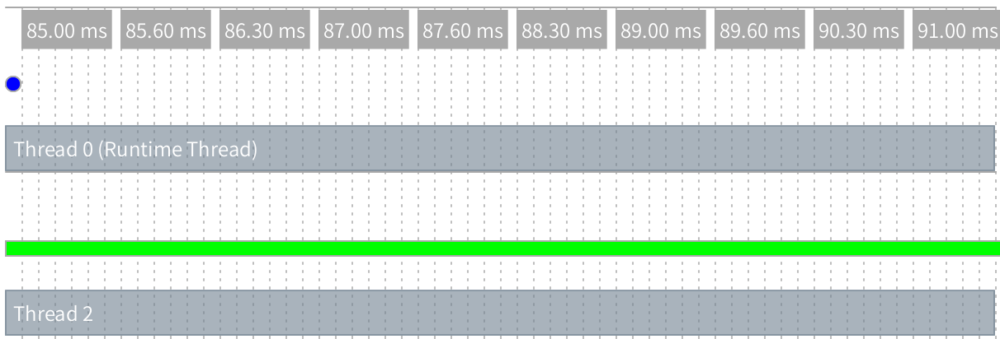

20 并行
Racket提供两种形式的并行（parallelism）：前景（futures）和现场（places）。在提供多个处理器的平台上，并行可以提高一个程序的运行时性能。
关于Racket里连续性能的信息又见性能。Racket还提供了对并发（concurrency）的线程，但线程没有提供并行；更多的信息见并发与同步。
20.1 前景并行
racket/future库通过与前景（futures）以及future和touch函数的并行，为性能改进提供支持。然而，这些结构的并行性受到几个因素的限制，当前的实现最适合于数值任务。在DrRacket中的性能中的警告也适用于前景；值得注意的是，调试手段目前使前景失效了。
其它函数，如thread，支持创建可靠的并发任务。然而，即使硬件和操作系统支持并行性，线程也不会真正并行运行。
作为一个开始的例子，any-double?函数获取一个数字列表，并确定列表中的任何数字有一个也包含在列表中的double：
(define (any-double? l) (for/or ([i (in-list l)]) (for/or ([i2 (in-list l)]) (= i2 (* 2 i)))))
这个函数在二次时间中运行，所以像l1和l2这样的大列表可能需要很长时间（按秒顺序）：
(define l1 (for/list ([i (in-range 5000)]) (+ (* 2 i) 1))) (define l2 (for/list ([i (in-range 5000)]) (- (* 2 i) 1))) (or (any-double? l1) (any-double? l2))
加速any-double?的最好的办法是使用不同的算法。然而，在提供至少两个处理单元的机器上，上述示例可以使用future和touch的大约一半时间运行：
(let ([f (future (lambda () (any-double? l2)))]) (or (any-double? l1) (touch f)))
前景f在与(any-double? l1)平行中运行(any-double? l2)，同时对(any-double? l2)的结果与(touch f)所要求的时间相同。
只要他们能安全地做到这一点，前景就可以并行运行，但“前景安全”的概念实际上与实施有关。“前景安全”和“前景不安全”操作之间的区别在Racket程序级别上可能还不太明显。本节剩余部分通过一个例子来说明这种区别，并显示如何使用前景的可视化工具有助于阐明这一点。
考虑一下曼德尔布罗特集合计算的以下核心：
(define (mandelbrot iterations x y n) (let ([ci (- (/ (* 2.0 y) n) 1.0)] [cr (- (/ (* 2.0 x) n) 1.5)]) (let loop ([i 0] [zr 0.0] [zi 0.0]) (if (> i iterations) i (let ([zrq (* zr zr)] [ziq (* zi zi)]) (cond [(> (+ zrq ziq) 4) i] [else (loop (add1 i) (+ (- zrq ziq) cr) (+ (* 2 zr zi) ci))]))))))
表达式(mandelbrot 10000000 62 500 1000)和(mandelbrot 10000000 62 501 1000)每次都要花一点时间产生一个答案。当然，计算两者都需要两倍的时间：
(list (mandelbrot 10000000 62 500 1000) (mandelbrot 10000000 62 501 1000))
不幸的是，试图用future并行运行两个计算并不能提高性能：
(let ([f (future (lambda () (mandelbrot 10000000 62 501 1000)))]) (list (mandelbrot 10000000 62 500 1000) (touch f)))
要知道为什么，使用future-visualizer，像这样：
(require future-visualizer) (visualize-futures (let ([f (future (lambda () (mandelbrot 10000000 62 501 1000)))]) (list (mandelbrot 10000000 62 500 1000) (touch f))))
这将打开一个窗口，显示计算跟踪的图形视图。窗口的左上部分包含一个执行时间线：

每个水平行代表一个操作系统级线程，着色点代表程序执行中的重要事件（它们被颜色编码以区分一个事件类型与另一个事件）。时间轴的上左位置蓝色圆点代表未来的创造。前景在线程1上执行一个短暂的时期（由第二行中的绿色条表示），然后暂停以允许运行时线程执行前景不安全操作。
在Racket的实现中，前景不安全操作分为两类。一个阻塞（blocking）操作中止前景求值，同时不允许它继续下去，直到它被接触（touched）。在touch中的操作完成之后，前景工作的剩余部分将由运行时线程依次进行求值。一个同步（synchronized）操作也中止前景，但运行时线程可以在任何时间执行操作，一旦完成，前景可能在并行中继续运行。内存分配和JIT编译是同步操作的两个常见示例。
在时间线中，我们在线程1的绿色条的右边看到一个橙色点——这个点代表一个同步操作（内存分配）。线程0上的第一个橙色圆点表示运行时线程在将来暂停后很快执行分配。不久之后，在一个阻塞操作前景中止（第一个红点），并且必须等到它被求值的touch（略后1049ms标记）。
当你把鼠标移动到一个事件，可视化工具显示你的有关事件和画箭头连接在相应的前景事件的详细信息。这张图片显示了对我们的未来的联系。

虚线橙色线连接前景中的第一个事件到创造它的前景，同时紫色线连接前景里的邻近事件。
我们没有看到并行性的原因是，mandelbrot中的循环的下一部分中的<和*操作包括一个浮点值和固定（整数）值的混合。这种混合通常触发一个在执行过程中慢路径，并且这个普通的慢路径通常会阻塞。
将常数变为第一个问题的mandelbrot地址中的浮点数：
(define (mandelbrot iterations x y n) (let ([ci (- (/ (* 2.0 y) n) 1.0)] [cr (- (/ (* 2.0 x) n) 1.5)]) (let loop ([i 0] [zr 0.0] [zi 0.0]) (if (> i iterations) i (let ([zrq (* zr zr)] [ziq (* zi zi)]) (cond [(> (+ zrq ziq) 4.0) i] [else (loop (add1 i) (+ (- zrq ziq) cr) (+ (* 2.0 zr zi) ci))]))))))
随着这种变化，mandelbrot计算可以并行运行。然而，我们仍然看到一种特殊的慢路径操作限制了我们的并行性（橙色点）：

问题是，这个例子中的大多数算术运算都会产生一个不精确的数字，它的存储必须被分配。虽然有些配置可以安全地只在没有运行时线程的情况下安全地执行，特别是频繁分配需要同步操作来克服任何性能改进。
利用flonum具体操作（见Fixnum和Flonum优化），我们可以重写mandelbrot以达到用更少的配置：
(define (mandelbrot iterations x y n) (let ([ci (fl- (fl/ (* 2.0 (->fl y)) (->fl n)) 1.0)] [cr (fl- (fl/ (* 2.0 (->fl x)) (->fl n)) 1.5)]) (let loop ([i 0] [zr 0.0] [zi 0.0]) (if (> i iterations) i (let ([zrq (fl* zr zr)] [ziq (fl* zi zi)]) (cond [(fl> (fl+ zrq ziq) 4.0) i] [else (loop (add1 i) (fl+ (fl- zrq ziq) cr) (fl+ (fl* 2.0 (fl* zr zi)) ci))]))))))
即使是在连续模式下，这种转换可以将mandelbrot速度提高8倍，但避免分配也允许mandelbrot在并行中更快地运行。执行这个程序产生下面的可视化工具：

注意，这里只显示一个绿色条，因为曼德尔布罗特计算中没有一个是由一个前景（运行时线程）求值的。
作为一个通用准则，在并行中通过JIT编译器内联安全运行的任何操作，当没有内联（包括所有的操作如果JIT编译器是非激活的）的其它操作被认为是不安全的。raco反编译（raco decompile）工具对操作可以被反编译器内联编译（见(part ("(lib scribblings/raco/raco.scrbl)" "decompile"))），所以反编译器可以用来帮助预测并行性能。
20.2 现场（place）并行
racket/place库通过与place表的并行来提供性能改进的支持。place表创造了一个现场（place），这实际上是一个新的Racket实例，可以平行于其它现场，包括初始现场。在每一个现场都可以使用Racket语言的全部功能，但只能通过消息传递来传递现场——使用place-channel-put和place-channel-get函数在有限的值集上——这有助于确保并行计算的安全性和独立性。
作为一个开始的例子，下面的racket程序使用一个现场（place）来确定列表中的任何一个数是否有一个也在列表中的双数：
#lang racket (provide main) (define (any-double? l) (for/or ([i (in-list l)]) (for/or ([i2 (in-list l)]) (= i2 (* 2 i))))) (define (main) (define p (place ch (define l (place-channel-get ch)) (define l-double? (any-double? l)) (place-channel-put ch l-double?))) (place-channel-put p (list 1 2 4 8)) (place-channel-get p))
place后的标识符ch绑定到 现场通道（place channel）。在place表中的剩余主体表达式在一个新的现场被求值，这个主体表达式使用ch与产生新位置的位置来表达。
在上面的place表的主体中，新的位置接收到一个超过ch的数字列表，并将列表绑定到l。它接着调用表上的any-double?并且绑定这个结果到l-double?。最终的主体表达式发送l-double?结果越过ch回到原来的现场。
在DrRacket里，保存并运行上面的程序后，在交互窗口对(main)求值以创建新的现场。当在DrRacket内使用现场（places），包含现场代码的模块在它被执行之前必须被保存到一个文件。另外，作为"double.rkt"保存该程序并且用以下内容从一个命令行运行
racket -tm double.rkt
在-t标志告诉racket加载double.rkt模块的地方，-m标志调用导出的main函数，同时-tm组合这两个标志。
place表有两个微妙的特点。首先，它将place主体提升为一个匿名的模块级的函数。这种提升意味着，place主体引用的任何绑定都必须在模块的顶层级可用。第二，place表dynamic-require在新创建的现场中的封闭模块。作为dynamic-require的一部分，当前模块主体将在新的现场被求值。第二个特性的后果是，该place不应立即出现在一个模块中或在模块的顶层调用的函数中；否则，调用模块将在一个新的现场调用相同的模块，诸如此类，触发一系列将很快耗尽内存的现场创建。
#lang racket (provide main) ; Don't do this! (define p (place ch (place-channel-get ch))) (define (indirect-place-invocation) (define p2 (place ch (place-channel-get ch)))) ; Don't do this, either! (indirect-place-invocation)
20.3 分布式现场
The racket/place/distributed library provides support for distributed programming.
The example bellow demonstrates how to launch a remote racket node instance, launch remote places on the new remote node instance, and start an event loop that monitors the remote node instance.
The example code can also be found in "racket/distributed/examples/named/master.rkt".
#lang racket/base (require racket/place/distributed racket/class racket/place racket/runtime-path "bank.rkt" "tuple.rkt") (define-runtime-path bank-path "bank.rkt") (define-runtime-path tuple-path "tuple.rkt") (provide main) (define (main) (define remote-node (spawn-remote-racket-node "localhost" #:listen-port 6344)) (define tuple-place (supervise-place-at remote-node #:named 'tuple-server tuple-path 'make-tuple-server)) (define bank-place (supervise-place-at remote-node bank-path 'make-bank)) (message-router remote-node (after-seconds 4 (displayln (bank-new-account bank-place 'user0)) (displayln (bank-add bank-place 'user0 10)) (displayln (bank-removeM bank-place 'user0 5))) (after-seconds 2 (define c (connect-to-named-place remote-node 'tuple-server)) (define d (connect-to-named-place remote-node 'tuple-server)) (tuple-server-hello c) (tuple-server-hello d) (displayln (tuple-server-set c "user0" 100)) (displayln (tuple-server-set d "user2" 200)) (displayln (tuple-server-get c "user0")) (displayln (tuple-server-get d "user2")) (displayln (tuple-server-get d "user0")) (displayln (tuple-server-get c "user2")) ) (after-seconds 8 (node-send-exit remote-node)) (after-seconds 10 (exit 0))))
The spawn-remote-racket-node primitive connects to "localhost" and starts a racloud node there that listens on port 6344 for further instructions. The handle to the new racloud node is assigned to the remote-node variable. Localhost is used so that the example can be run using only a single machine. However localhost can be replaced by any host with ssh publickey access and racket. The supervise-named-dynamic-place-at creates a new place on the remote-node. The new place will be identified in the future by its name symbol 'tuple-server. A place descriptor is expected to be returned by invoking dynamic-place with the tuple-path module path and the 'make-tuple-server symbol.
The code for the tuple-server place exists in the file "tuple.rkt". The "tuple.rkt" file contains the use of define-named-remote-server form, which defines a RPC server suitiable for invocation by supervise-named-dynamic-place-at.
#lang racket/base (require racket/match racket/place/define-remote-server) (define-named-remote-server tuple-server (define-state h (make-hash)) (define-rpc (set k v) (hash-set! h k v) v) (define-rpc (get k) (hash-ref h k #f)) (define-cast (hello) (printf "Hello from define-cast\n") (flush-output)))
The define-named-remote-server form takes an identifier and a list of custom expressions as its arguments. From the identifier a place-thunk function is created by prepending the make- prefix. In this case make-tuple-server. The make-tuple-server identifier is the place-function-name given to the supervise-named-dynamic-place-at form above. The define-state custom form translates into a simple define form, which is closed over by the define-rpc form.
The define-rpc form is expanded into two parts. The first part is the client stubs that call the rpc functions. The client function name is formed by concatenating the define-named-remote-server identifier, tuple-server, with the RPC function name set to form tuple-server-set. The RPC client functions take a destination argument which is a remote-connection% descriptor and then the RPC function arguments. The RPC client function sends the RPC function name, set, and the RPC arguments to the destination by calling an internal function named-place-channel-put. The RPC client then calls named-place-channel-get to wait for the RPC response.
The second expansion part of define-rpc is the server implementation of the RPC call. The server is implemented by a match expression inside the make-tuple-server function. The match clause for tuple-server-set matches on messages beginning with the 'set symbol. The server executes the RPC call with the communicated arguments and sends the result back to the RPC client.
The define-cast form is similar to the define-rpc form except there is no reply message from the server to client
(module tuple racket/base (require racket/place racket/match) (define/provide (tuple-server-set dest k v) (named-place-channel-put dest (list 'set k v)) (named-place-channel-get dest)) (define/provide (tuple-server-get dest k) (named-place-channel-put dest (list 'get k)) (named-place-channel-get dest)) (define/provide (tuple-server-hello dest) (named-place-channel-put dest (list 'hello))) (define/provide (make-tuple-server ch) (let () (define h (make-hash)) (let loop () (define msg (place-channel-get ch)) (define (log-to-parent-real msg #:severity (severity 'info)) (place-channel-put ch (log-message severity msg))) (syntax-parameterize ((log-to-parent (make-rename-transformer #'log-to-parent-real))) (match msg ((list (list 'set k v) src) (define result (let () (hash-set! h k v) v)) (place-channel-put src result) (loop)) ((list (list 'get k) src) (define result (let () (hash-ref h k #f))) (place-channel-put src result) (loop)) ((list (list 'hello) src) (define result (let () (printf "Hello from define-cast\n") (flush-output))) (loop)))) loop))))